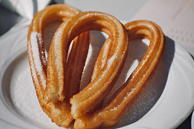

Vamos a Preparar: Churros

Ingredientes:
- 1 taza de agua
- 1 taza de leche
- 2 tazas de harina de trigo
- 1 cucharadita de sal
- 1 cucharada de azúcar
- Aceite vegetal, para freír
- Azúcar y canela, para espolvorear
Preparación:
- En una cacerola mediana, mezclá el agua, la leche, la sal y el azúcar. Llevá a ebullición a fuego medio-alto.
- Retirá la cacerola del fuego y agregá la harina de trigo de golpe. Mezclá vigorosamente hasta que se forme una masa homogénea.
- Transferí la masa a una churrera o a una bolsa de plástico con una boquilla de estrella.
- En una sartén grande, calentá el aceite vegetal a fuego medio-alto.
- Exprimí la churrera o la bolsa de plástico sobre el aceite caliente, formando churros largos y finos.
- Freí los churros durante 2-3 minutos por lado, o hasta que estén dorados.
- Retirá los churros del aceite y escurrí sobre papel absorbente.
- Espolvoreá los churros con azúcar y canela a gusto y serví.
Consejos:
- Para obtener churros más crujientes, los podés freir a fuego alto.
- Si no tenés churrera, podés cortar la masa en trozos pequeños y freírlos en el aceite caliente.
- Podés servir los churros con chocolate caliente, café o lo que más te guste.
― Bon Appétit!